NAYSURE
Simple, user-friendly outdoors app
for true nature novices.

my roles
SOLE UX | UI DESIGNER ON PROJECT
UX / UI Designer
Brand Developer
Visual Designer
Information Architect
Content Creator

PROBLEM
Nature apps are often very advanced, and this makes it difficult for beginners who want to discover their interests.

Competitive Analysis
User Surveys
User Personas
User Stories
User Flows
Lo Fi Wireframes
Style Guide
Logo Design
Hi Fi Mockups
DELIVERABLES
NaySure is an iOS application that offers users truly simple outdoor adventures based on the time limit the user selects. After five adventures, it matches users with new outdoor hobbies.
SOLUTION

COMPETITIVE ANALYSIS
YONDER | BIVY | ALLTRAILS | THE OUTBOUND | GEOCACHING
For this analysis, I compared five outdoor-focused apps. I learned what these apps were doing well, what they could improve, as well as their opportunities, and threats. From this analysis, I was able to see where NaySure could fit in the mix and succeed in the outdoor mobile app space.
Yonder is for all skill levels.
NaySure will be mostly for beginners.
Yonder has a social /community aspect.
NaySure's MVP will not feature a community.
Bivy's app is not well explained.
NaySure will be explained on the first screen.
AllTrails utilizes filters well.
NaySure will use categories/filters too.
The Outbound featured user interests.
NaySure will ask users their interests, too.
Geocaching has lots of positive user reviews.
NaySure will have geocaching activities.
MAJOR TAKEAWAYS: The research confirmed that NaySure would be aimed at beginners without a heavy hiking focus. Additionally, five applications to compare felt like too many, I would scale back to three or four next time.
VIEW ANALYSIS
USER SURVEYS
SURVEYING REAL USERS FIRST
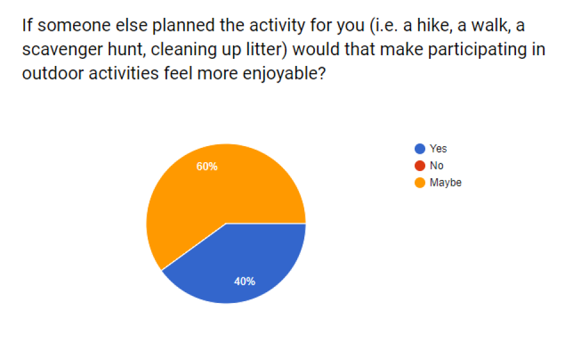
I asked users some key questions about their outdoor habits and preferences, along with questions about what they do and do not like about any nature apps they’ve used before.
MAJOR TAKEAWAYS: The vast majority of users say they enjoy getting outdoors. Over 70% of users surveyed said they have difficulty getting outside. They shared that they feel unsure about what to do outside and could use advice or direction. 100% of users said they would or might get outside more if someone else planned the activity.
VIEW RESULTS
user personas
KEEP USERS AT THE HEART OF NAYSURE
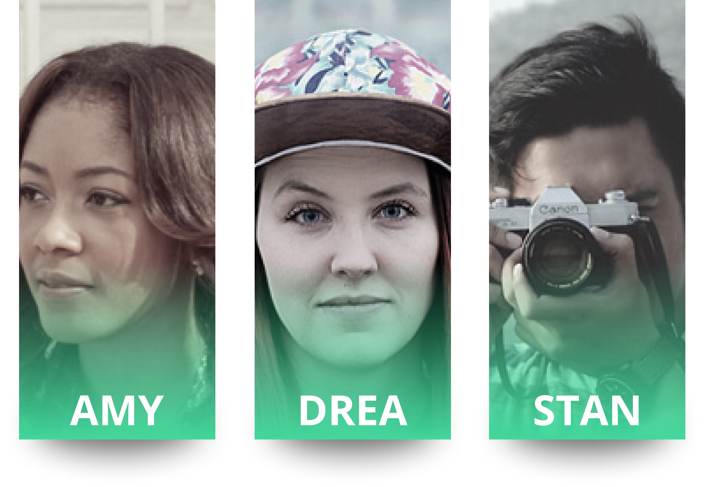
I created three personas - Drea, Amy, and Stan - who
helped to keep the focus on users while building NaySure.
Some of their pain points were:
Geocaching doesn’t help Stan learn new outdoor interests.
Drea doesn’t know where to even begin when it comes to getting outdoors.
Amy feels that apps aren’t focused on beginners, but rather people who already know what they like outdoors.
Some of their goals were:
Stan wants to discover another outdoor hobby besides hiking.
Drea wants an activity to do with her daughter outside that is simple.
Amy wants to get outside more, even a few minutes more per day.
MAJOR TAKEAWAYS: I learned that personas are incredibly key to keeping real users in mind throughout the entire project. Their frustrations and goals helped guide NaySure.
VIEW PERSONAS
user STORIES
NARROW FOCUS, REMAIN USER-CENTERED
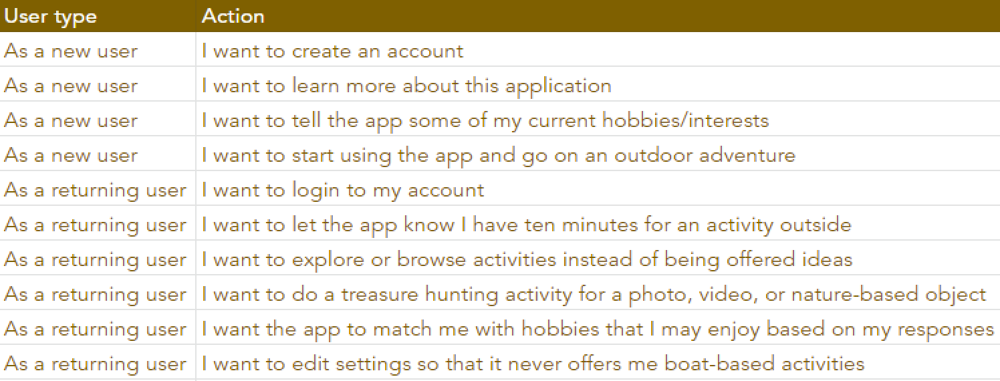
After creating personas, I had enough information to begin creating user stories. I wanted to focus on the most important stories, high priority, for the MVP. The thought of adding a “Community” aspect snuck up on me, but I reminded myself it wasn’t what NaySure users were looking for at this point. “I want to meet friends locally who are nature beginners, too” became a low priority story.
MAJOR TAKEAWAYS: NaySure is a simple app with one big action - getting users outside on an adventure. It was hard getting past this one high priority user story, but the personas and survey results really helped guide me here.
VIEW STORIES
user flows
WHAT SCREENS WILL NAYSURE NEED?
Again, NaySure felt like a simple concept, so it was a bit challenging to find enough material for the flows. The main flow, going on an adventure, was taking up a lot of space in my head at this point. However, I know that onboarding is important as well, along with other portions of the application such as browsing adventures, and turning on and off certain parts of the app for those with varying abilities.
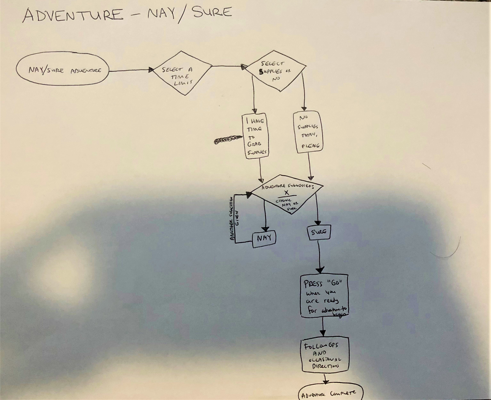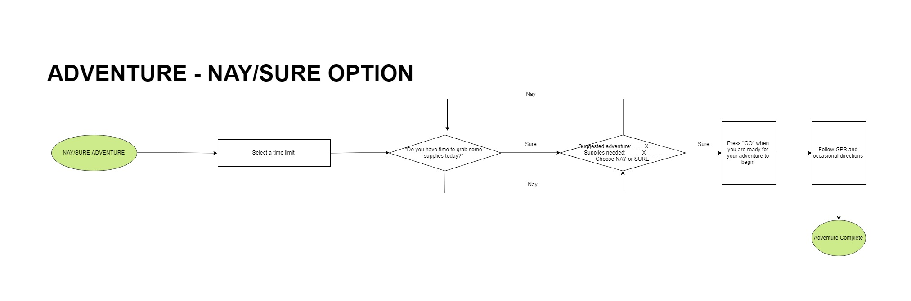
MAJOR TAKEAWAYS: Reminding myself that this research is the backbone of the app helped me to create strong digital flows. Digitizing flows helps everyone clearly see what is going on within the app.
VIEW FLOWS
lo-fi prototyping
AND TESTING THE SKETCHES WITH MARVEL
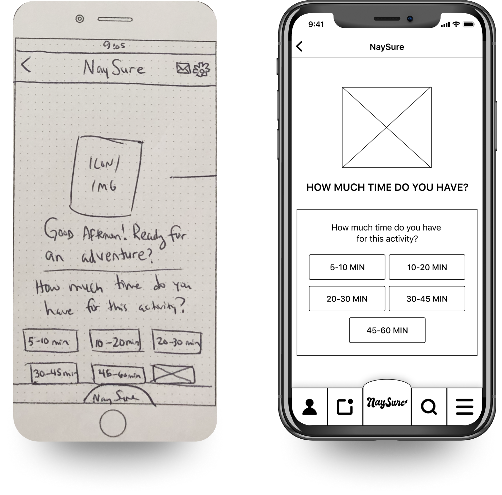
I first sketched wireframes by hand, then put them into the Marvel Pop app to test the sketches with users. This was slightly time consuming, but was so easy and user friendly I would do this step again in the future. It was important for me to see how users were interacting with the app early on, so I could make vital changes before digitizing the low fidelity wireframes.
MAJOR TAKEAWAYS: After the sketching, I went on to create the wireframes in Figma. With components, it felt really simple, and this portion of the project went by quickly due to the confidence instilled by early testing.
VIEW LO-FI
USER TESTING
ROUND ONE
I tested some users in person and some users remotely. From the tests, I learned that the most important information should be found on the first swipe screen when starting the app. Users also showed me that I would need to find a way to make sign up simple and intuitive from within the app.
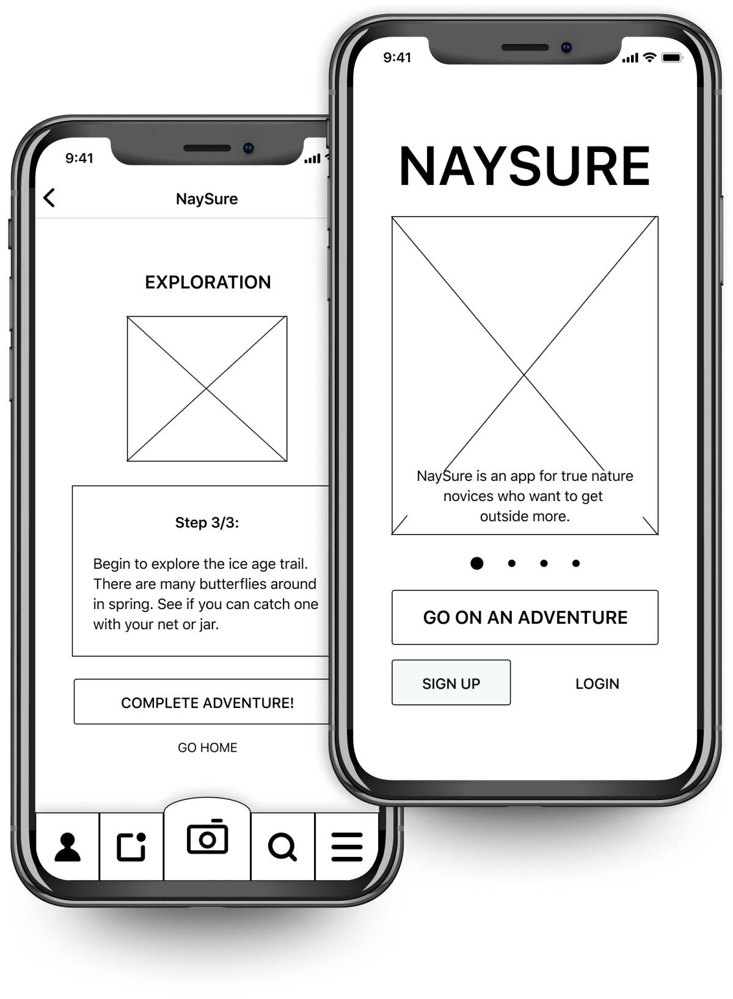
MAJOR TAKEAWAYS: The users flowed through onboarding with no issues in these low fidelity wireframes. However signing up after an adventure would have to be added into the prototype.
VIEW RESULTS
BRANDING
FROM CONCEPT TO COMPLETION
NaySure’s branding felt fast and easy compared to other branding work I’ve done in the past. Keeping the brand’s personality in mind, I drew up rough logos then digitized the strongest. Through preference testing, I ended up with NaySure’s logo. The color palette was also tested with users, and after two tests, they firmly chose a very modern and colorful color scheme for NaySure. Featured below are branding sketches, moodboard, color palette, and final logo.
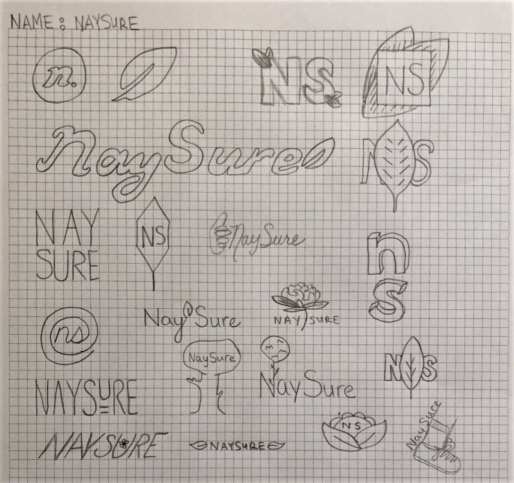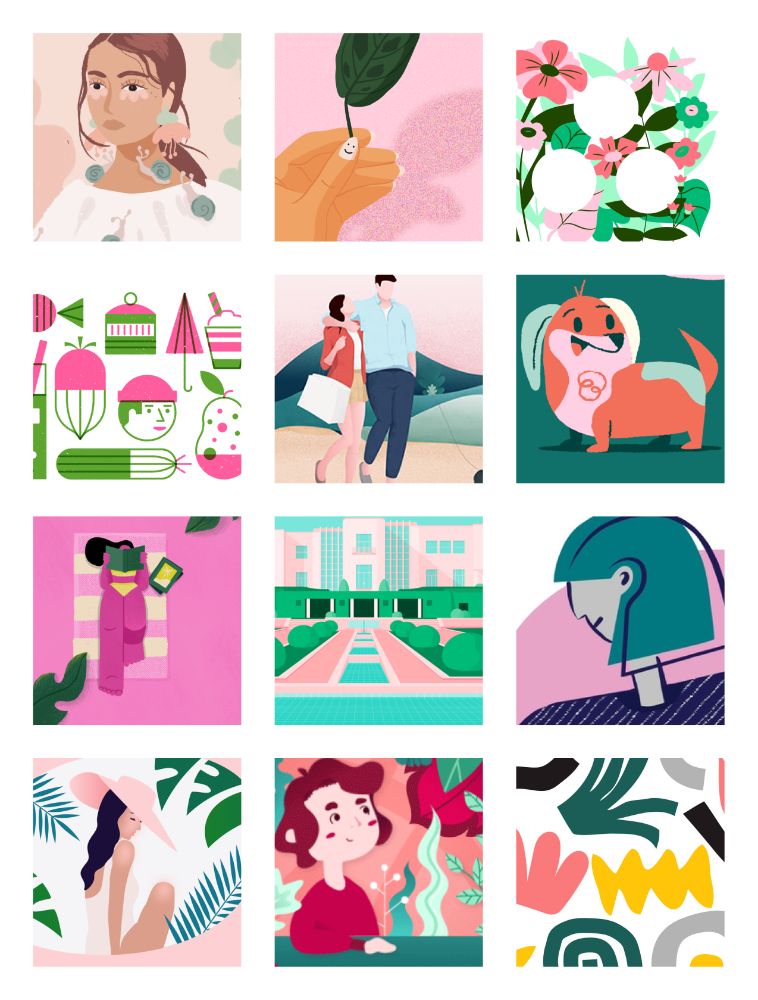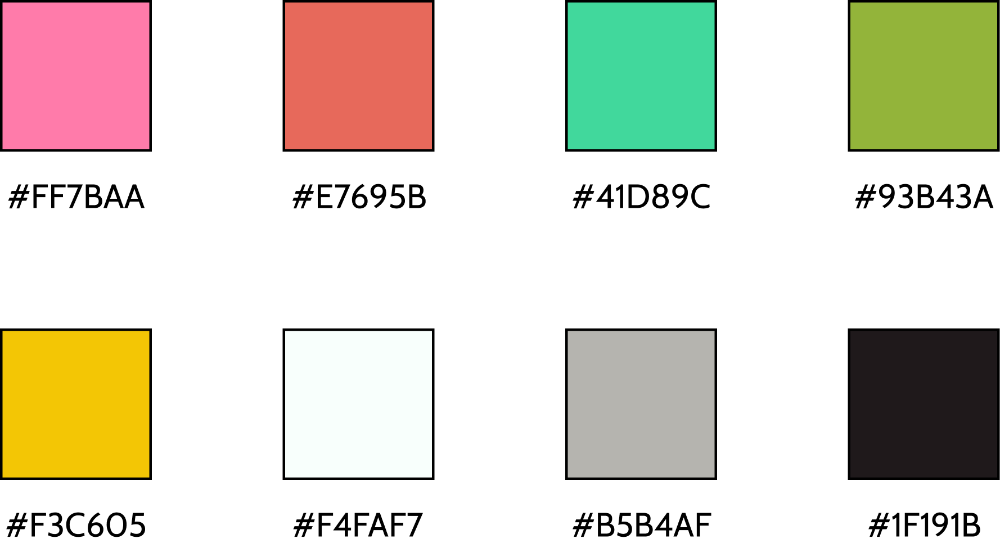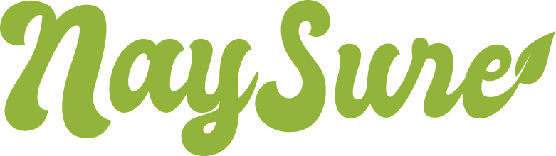
MAJOR TAKEAWAYS: Users know what they want when it comes to a color scheme in a mobile application. A modern color palette and modern/retro logo were what users liked as well.
VIEW BRAND
hi-fi mockups
ELEVATING THE LOOK OF THE APP
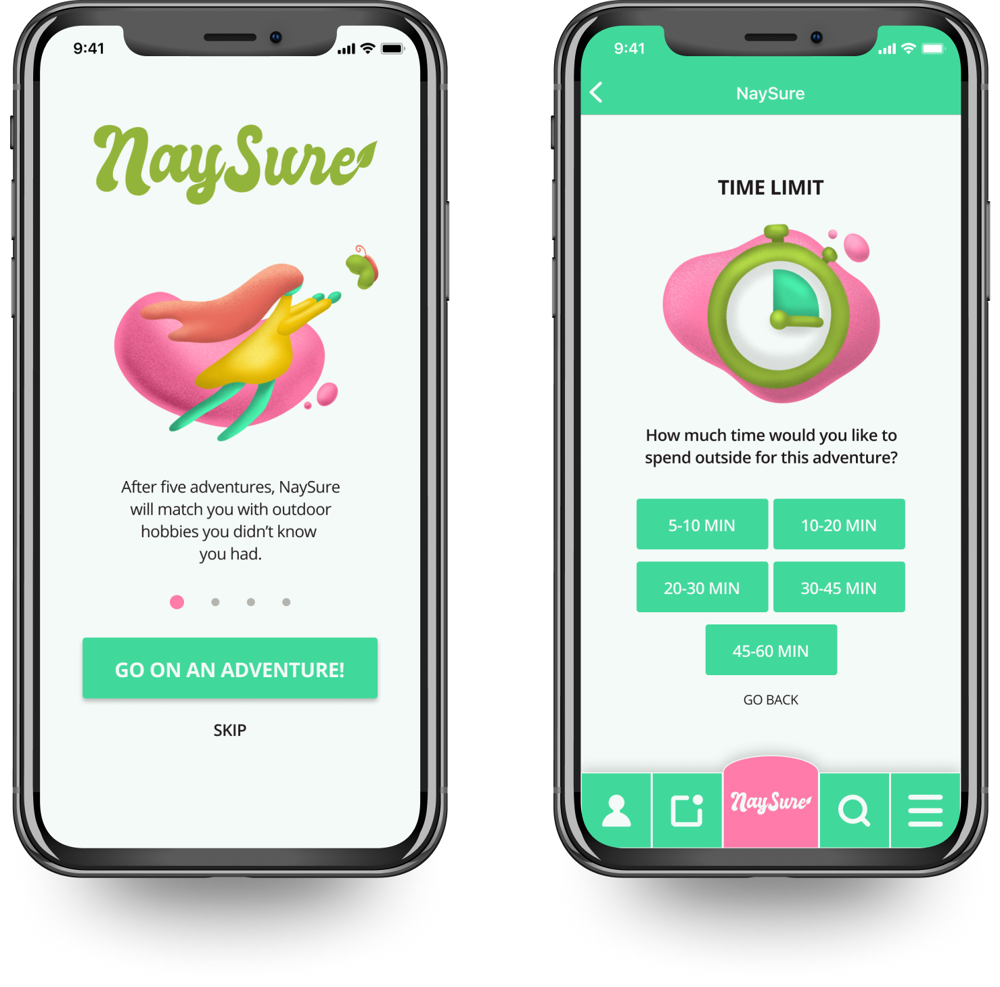
It was a lot of fun to add in the colors, typefaces, and branding into the low fidelity wireframes to turn them into a realistic looking app. Using components, I was able to do this more quickly than I had on previous projects. I also was able to use Procreate to make the illustrations for the app, tying together the Lava concept from the typeface into the artwork. I then tested these with users using InVision.
MAJOR TAKEAWAYS: Users can look at something and intuitively click through an app almost without thinking if the
app is well made.
VIEW HI-FI
USER TESTING
ROUND TWO
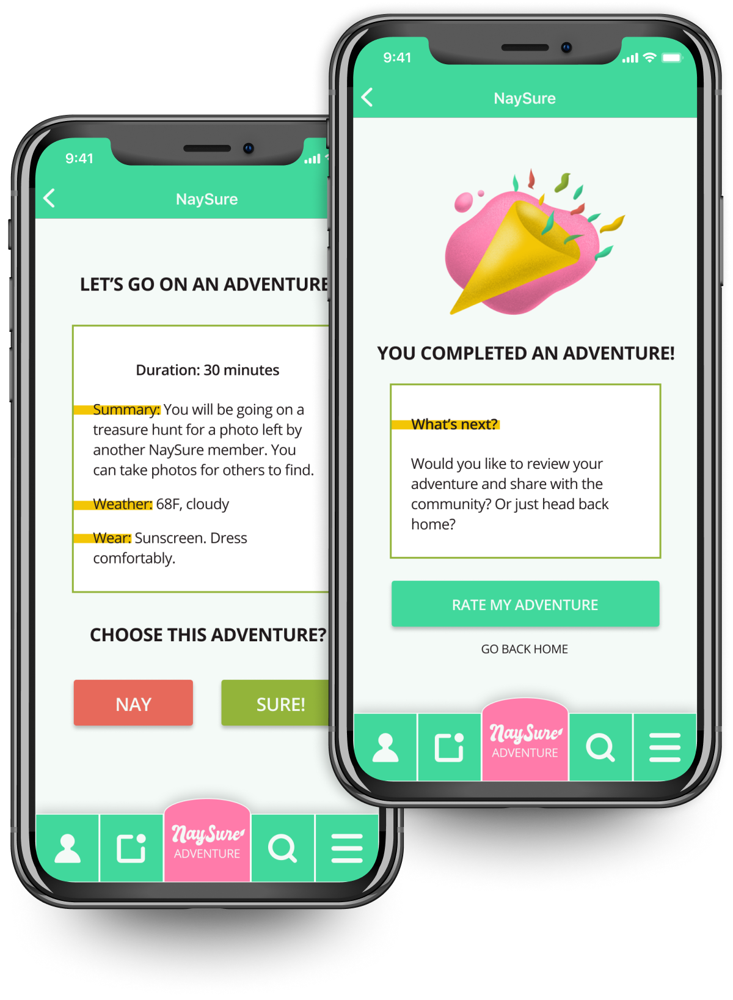
I created mockups which I then put into InVision to make into clickable prototypes for users to test. Even at this high fidelity stage, issues were found. Through testing, I learned users would like a button to confirm time on the “select a time” screen. Additionally, users did not notice but I did notice that the gardening activity had a gps/map feature but that adventure did not require one. Some other smaller decisions were made too, such as adding lines would make the map appear more interactive. I also noticed some wording changes that could be made.
MAJOR TAKEAWAYS: Testing users at any stage is helpful. Users are who this is created for, and their input is invaluable.
VIEW RESULTS
ADDITIONAL USER RESEARCH
FINE TUNING THE LOOK AND FUNCTION
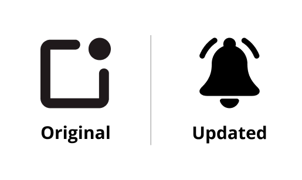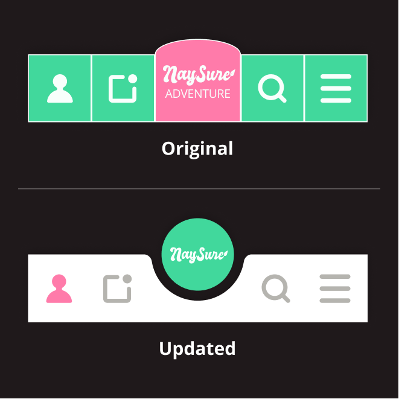
Wanting to further elevate NaySure, I did some usability tests to find out if users were understanding some key icons within the app. I performed two A/B tests and one design question test, which simply asked users if they recognized the icons being shown in the images.
MAJOR TAKEAWAYS: The users were not recognizing the notifications icon, so that was changed. Also the non-standard tab bar was not favored by users, so it was swapped for a more modern option.
VIEW RESEARCH
FINAL PROTOTYPE
NAYSURE, COMPLETE
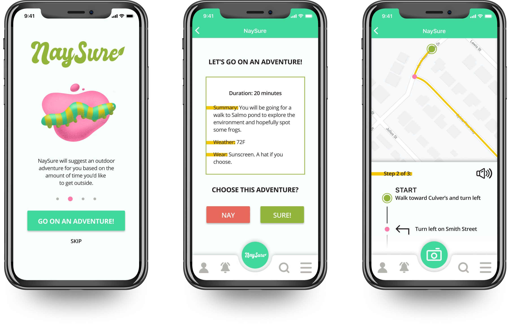
After the final changes, NaySure was looking and functioning very well.
Its final form reflected user input in a big way.
MAJOR TAKEAWAYS: Though the final changes were small in comparison to the large amount of work put in up until this point, they helped tie the app together nicely in both look and function.
VIEW THE APP
CONCLUSION
WHAT WOULD I DO DIFFERENTLY?
Throughout this project, there were many things that came together quickly and easily. With user feedback, the branding and low fidelity wireframes felt like a breeze. User testing enlightened me to bugs such as some small hangups when linking prototype screens in InVision. Additionally, user testing showed confusion surrounding the “getting matched with a hobby” concept. In future projects, I will continue doing testing on my sketches with Marvel App if I have the opportunity. And I will continue listening to users, learning more about their needs, and focusing on them first.